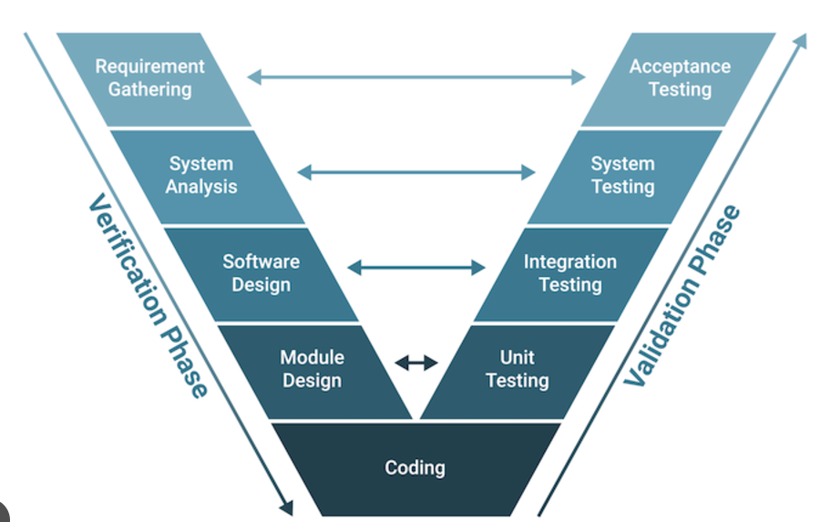

Selle mudeli põhieesmärk on tagada, et iga arendusfaas oleks tihedalt seotud vastava testimisfaasiga. Mudel sobib eriti hästi projektidele, kus nõuded on selged ja stabiilsed.
Kujutab arendustegevuste ja testimistegevuste vahelist seost V-tähega.
Requirment Analysis: Kogutakse ja dokumenteeritakse süsteemi nõuded. Määratakse tarkvara funktsionaalsed ja mittefunktsionaalsed nõuded ning kasutaja ootused.
System Design: Kavandatakse süsteemi üldine arhitektuur ja määratakse, kuidas erinevad komponendid suhtlevad. Kujundatakse süsteemi struktuur.
Detailed Design: Täpne kavand iga süsteemikomponendi kohta, sealhulgas algoritmid, andmebaasid ja liidesed. Määratakse iga mooduli sisemine töö.
Implementation: Kodeeritakse tarkvara vastavalt eelnevalt loodud disainile. Selle tulemuseks on töötavad moodulid.
Unit Testing: Testitakse individuaalseid tarkvaramooduleid, et kontrollida nende funktsionaalsust ja veenduda, et need töötavad iseseisvalt õigesti.
Integration and System Testing: Kõik moodulid ühendatakse ja testitakse koos, et veenduda nende koostalitluses ja süsteemi terviklikkuses.
Acceptance Testing: Kontrollitakse, kas lõplik toode vastab kliendi nõuetele ja ootustele. See on tarkvara üleandmise eeltingimus.
Deployment and Maintenance: Tarkvara juurutatakse reaalsesse kasutuskeskkonda ning tehakse pidevaid parandusi ja värskendusi vastavalt vajadusele.
Selge ja struktureeritud protsess: iga etapp järgneb loogiliselt eelnevale.
Hea jälgida: iga arendusfaas on seotud konkreetse testimisfaasiga.
Sobib hästi kindlate nõuetega projektidele.
